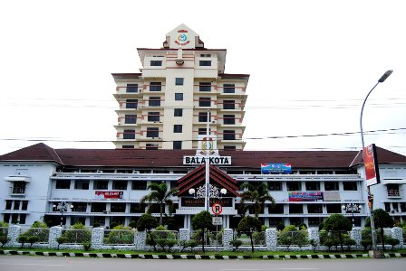
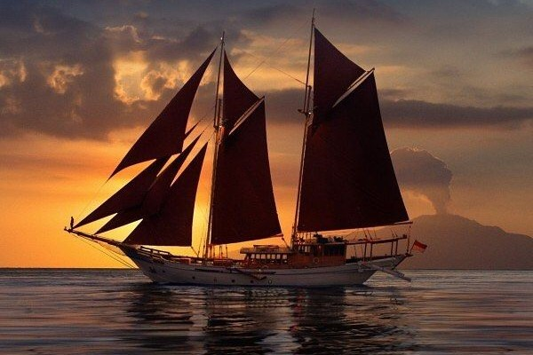
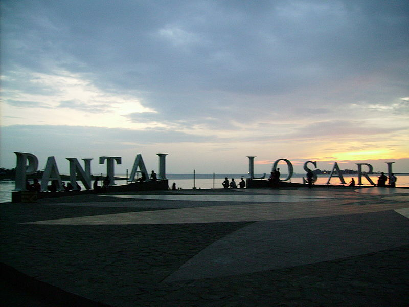
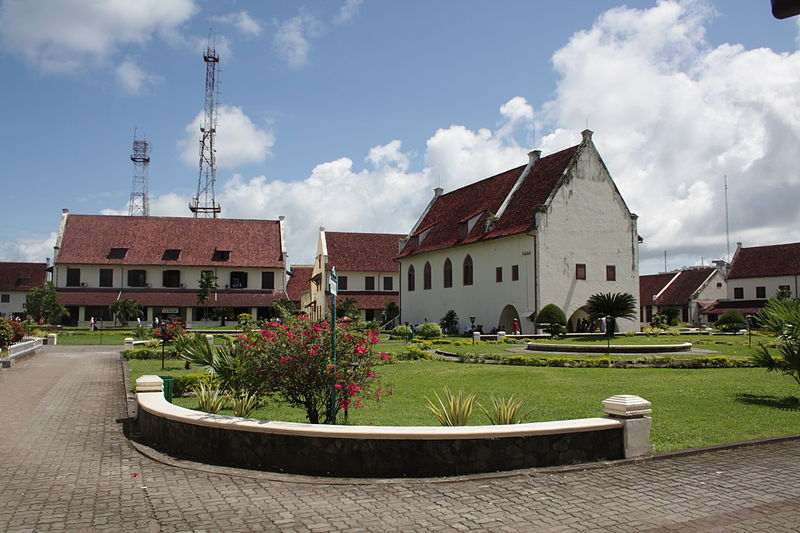

Sejarah

Nama Makassar sudah disebutkan dalam pupuh 14/3 kitab Nagarakretagama karya Mpu Prapanca pada abad ke-14, sebagai salah satu daerah taklukkan Majapahit.Walaupun demikian, Raja Gowa ke-9 Tumaparisi Kallonna (1510-1546) diperkirakan adalah tokoh pertama yang benar-benar mengembangkan kota Makassar. Ia memindahkan pusat kerajaan dari pedalaman ke tepi pantai, mendirikan benteng di muara Sungai Jeneberang, serta mengangkat seorang syahbandar untuk mengatur perdagangan.
Kota ini dahulu bernama Ujung Pandang dan dipakai dari kira-kira tahun 1971 sampai tahun 1999. Alasan untuk mengganti nama Makassar menjadi Ujung Pandang dengan alasan politik, antara lain karena Makassar adalah nama sebuah suku bangsa padahal tidak semua penduduk kota Makassar adalah anggota dari etnik Makassar.
Geografis

Makassar adalah Ibu Kota Provinsi Sulawesi Selatan, yang terletak di bagian Selatan Pulau Sulawesi yang dahulu disebut Ujung Pandang, terletak antara 119º24’17’38” Bujur Timur dan 5º8’6’19” Lintang Selatan yang berbatasan sebelah Utara dengan Kabupaten Maros, sebelah Timur Kabupaten Maros, sebelah selatan Kabupaten Gowa dan sebelah Barat adalah Selat Makassar. Kota Makassar memiliki topografi dengan kemiringan lahan 0-2°(datar) dan kemiringan lahan 3-15° (bergelombang). Luas Wilayah Kota Makassar tercatat 175,77 km persegi. Kota Makassar memiliki kondisi iklim sedang hingga tropis memiliki suhu udara rata-rata berkisar antara 26,°C sampai dengan 29°C.
Kota Makassar adalah kota yang terletak dekat dengan pantai yang membentang sepanjang koridor barat dan utara dan juga dikenal sebagai “Waterfront City” yang didalamnya mengalir beberapa sungai (Sungai Tallo, Sungai Jeneberang, dan Sungai Pampang) yang kesemuanya bermuara ke dalam kota. Kota Makassar merupakan hamparan daratan rendah yang berada pada ketinggian antara 0-25 meter dari permukaan laut. Dari kondisi ini menyebabkan Kota Makassar sering mengalami genangan air pada musim hujan, terutama pada saat turun hujan bersamaan dengan naiknya air pasang.
Wisata
Tempat wisata di Makassar penuh dengan keindahannya yang memanjakan mata. Maka dari itu, kota ini cocok menjadi tujuan bersenang-senang dan menghabiskan waktu libur.
Pantai Losari

Pantai Losari adalah sebuah pantai yang terletak di sebelah barat kota Makassar, provinsi Sulawesi Selatan, Indonesia. Pantai ini menjadi tempat bagi warga Makassar untuk menghabiskan waktu pada pagi, sore dan malam hari menikmati pemandangan matahari tenggelam yang sangat indah.
Benteng Fort Rotterdam

Fort Rotterdam, merupakan salah satu benteng di Sulawesi Selatan yang boleh dianggap megah dan menawan. Benteng ini merupakan peninggalan sejarah Kesultanan Gowa, Kesultanan ini pernah berjaya sekitar abad ke-17 dengan ibu kota Makassar. Kesultanan ini sebenarnya memiliki 17 buah benteng yang mengitari seluruh ibu kota. Hanya saja, Benteng Fort Rotterdam merupakan benteng paling megah di antara benteng benteng lainnya dan keasliannya masih terpelihara hingga kini.